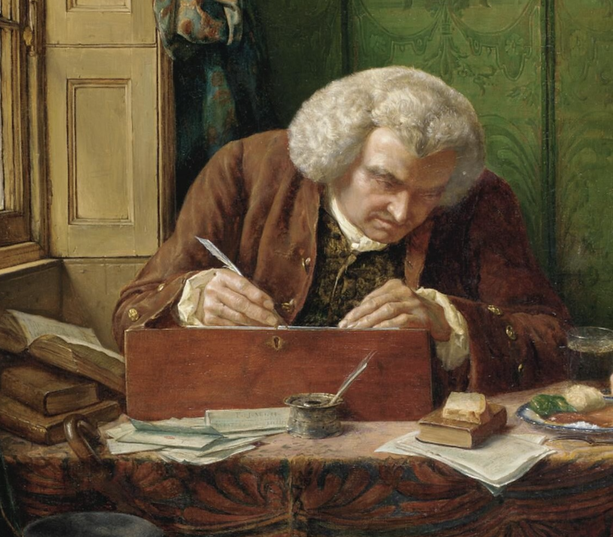

English Composition
Homework Status Checks
English Composition

Table of Contents
Buster Keaton Links
Buster Keaton - Motorcycle clip
Buster Keaton - Seven Chances
Buster Keaton - Elevator Chase
Charlie Chaplin Links
“Modern Times” Roller skating scene
“Modern Times” Factory scene
“Boxing”
“Lion’s Cage”
“The Kid” - Working in the Streets
“The Kid” - Fight scene
Chaplin VS Keaton
“Modern Times” - The Mechanics Assistant
“Modern Times” - Smuggled Nose Powder
“The Kid” - Pancake scene
“The Great Dictator” - Adenoid Hynkel’s place
“The Great Dictator”- When Dictators Meet
“The Circus” - Mirror Maze
“Modern Times” - Dream House
“The Circus” - The Tramp Gets a Job
“The Gold Rush” - Charlie Chaplin Eating His Shoe
“The Kid” - Charlie Chaplin Finds a Baby
Harold Lloyd Links
Harold Lloyd - Safety Last
Harold Lloyd - Hot Water
Harold Lloyd - Taxi Experience in New York City
Harry Lloyd - “Speedy” Final
Harold Lloyd- The Climbing Scene, Part 1
W. C. Fields Links
W. C. Fields dinner
W. C. Fields - Canadian Club
W. C. Fields - The Gas Station Exit
W. C. Fields - The Diner Sketch
Art
Winslow Homer
Albert Bierdstadt
Thomas Chambers
Edward Hopper
Asher Brown Durand
Other pieces